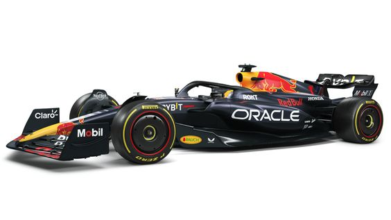

Formula One is a series of races held at different venues around the world, of the fastest open-wheel, single seater, four-wheeled autos in the world. It was first introduced in 1946 and introduced the Driver's Championship in 1950 and then the Constructor's Championship in 1958.
Every year there are 10 teams on the F1 Grid with 2 drivers each. The current teams are Ferrari, McLaren, RedBull, Mercedes, Aston Martin, Alpine, Williams, AplhaTauri, Haas and Alfa Romeo. An F1 Team is usually completed with some key members including:

A normal F1 Race Weekend usually looks something like this:
Michael Schumacher is often characterised as the greatest F1 Driver of all time. He is a German former racing driver who competed in Formula One for Jordan, Benetton, Ferrari, and Mercedes. Schumacher has a joint-record seven World Drivers' Championship titles (tied with Lewis Hamilton) and, at the time of his retirement from the sport in 2012, he held the records for the most wins (91), pole positions (68), and podium finishes (155)—which have since been broken by Hamilton—while he maintains the record for the number of total fastest laps (77), among others.
Sir Lewis Carl Davidson Hamilton is a British racing driver currently competing in Formula One, driving for Mercedes. In Formula One, Hamilton has won a joint-record seven World Drivers' Championship titles (tied with Michael Schumacher), and holds the records for the most wins (103), pole positions (104), and podium finishes (196), among others.
Max Emilian Verstappen is the current reigning World Champion with 3 consecutive WDCs with his most recent one being in Qatar of 2023. He currently races with Red Bull Racing-Honda RBPT. After winning the 2021 Abu Dhabi Grand Prix, Verstappen became the first Dutch driver to win the Formula One World Championship, and the 34th Formula One World Drivers' Champion. As of the 2023 Qatar Grand Prix, Verstappen has achieved 49 victories and 30 pole positions. He scored the first hat-trick of his career at the 2021 French Grand Prix and his first grand slam at the 2021 Austrian Grand Prix. He repeated the feat at the 2022 Emilia Romagna Grand Prix,2023 Spanish Grand Prix,[10] and 2023 Qatar Grand Prix and he's set to remain with RedBull until 2028.